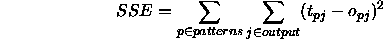
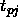
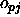

The window of the shell from which SNNS is invoked is used for the output of protocol messages.
These protocols include:
When learning is started, the error of the output units is reported on this window after each epoch, i.e. after the presentation of all patterns.
To save the window from being flooded on longer training runs, the maximum number of reported errors is limited to 10. Therefore, when 20 learning cycles are specified, the error gets printed only after every other cycle. This error report has the following form:
Learning all patterns:
epochs : 100
parameter: 0.80000
#o-units : 26
#patterns: 26
epoch: SSE MSE SSE/o-units
Train 100: 57.78724 2.22259 2.22259
Train 90: 24.67467 0.94903 0.94903
Train 80: 23.73399 0.91285 0.91285
Train 70: 22.40005 0.86154 0.86154
Train 60: 20.42843 0.78571 0.78571
Train 50: 18.30172 0.70391 0.70391
Test 50: 25.34673 0.97487 0.97487
Train 40: 16.57888 0.63765 0.63765
Train 30: 14.84296 0.57088 0.57088
Train 20: 12.97301 0.49896 0.49896
Train 10: 11.22209 0.43162 0.43162
Train 1: 10.03500 0.38596 0.38596
Test 1: 11.13500 0.42696 0.42696
The first line reports whether all or only a single pattern is trained. The next lines give the number of specified cycles and the given learning parameters, followed by a brief setup description.
Then the 10-row-table of the learning progress is given. If validation is turned on this table is intermixed with the output of the validation. The first column specifies whether the displayed error is computed on the training or validation pattern set, ``Test'' is printed for the latter case. The second column gives the number of epochs still to be processed. The third column is the Sum Squared Error (SSE) of the learning function. It is computed with the following formula:

where

is the teaching output (desired output) of output neuron j on pattern p and
is the actual output. The forth column is the Mean Squared Error (MSE), which is the SSE divided by the number of patterns. The fifth value finally gives the SSE divided by the number of output units.The second and third values are equal if there are as many patterns as there are output units (e.g. the letters network), the first and third values are identical, if the network has only one output unit (e.g. the xor network).
If the training of the network is interrupted by pressing the
 button in the control panel, the values for the last
completed training cycle are reported.
button in the control panel, the values for the last
completed training cycle are reported.